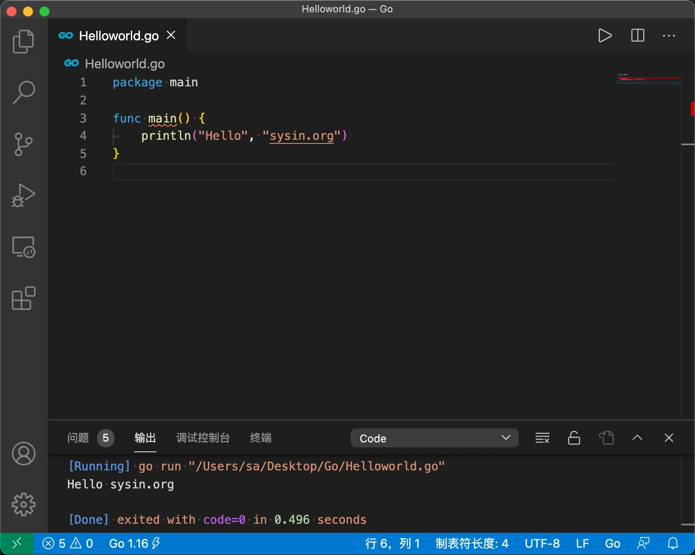

请访问原文链接：Go 1.16 发布，VS Code 配置 Go 语言开发环境（macOS、Linux、Windows），查看最新版。原创作品，转载请保留出处。
作者主页：sysin.org

Go 1.16 发布
go1.16 (released 2021/02/16)，支持 Apple silicon Mac。
Go 1.16 正式发布，添加了 macOS ARM64（Apple silicon）的支持，该版本主要包括工具链、运行时和库的实现优化。并且，该版本保留了 Go 1 兼容性的承诺，几乎所有 Go 程序都能像以前一样继续编译和运行。详见：Go 1.16 Release Notes。
Darwin and iOS
Go 1.16 adds support of 64-bit ARM architecture on macOS (also known as Apple silicon) with GOOS=darwin, GOARCH=arm64. Like the darwin/amd64 port, the darwin/arm64 port supports cgo, internal and external linking, c-archive, c-shared, and pie build modes, and the race detector.
The iOS port, which was previously darwin/arm64, has been renamed to ios/arm64. GOOS=ios implies the darwin build tag, just as GOOS=android implies the linux build tag. This change should be transparent to anyone using gomobile to build iOS apps.
Go 1.16 adds an ios/amd64 port, which targets the iOS simulator running on AMD64-based macOS. Previously this was unofficially supported through darwin/amd64 with the ios build tag set. See also misc/ios/README for details about how to build programs for iOS and iOS simulator.
Go 1.16 is the last release that will run on macOS 10.12 Sierra. Go 1.17 will require macOS 10.13 High Sierra or later.
核心平台版本下载：
| File name | Kind | OS | Arch | Size | SHA256 Checksum |
|---|---|---|---|---|---|
| go1.16.darwin-amd64.tar.gz | Archive | macOS | x86-64 | 124MB | 6000a9522975d116bf76044967d7e69e04e982e9625330d9a539a8b45395f9a8 |
| go1.16.darwin-arm64.tar.gz | Archive | macOS | ARMv8 | 120MB | 4dac57c00168d30bbd02d95131d5de9ca88e04f2c5a29a404576f30ae9b54810 |
| go1.16.linux-amd64.tar.gz | Archive | Linux | x86-64 | 123MB | 013a489ebb3e24ef3d915abe5b94c3286c070dfe0818d5bca8108f1d6e8440d2 |
| go1.16.windows-amd64.zip | Archive | Windows | x86-64 | 137MB | 5cc88fa506b3d5c453c54c3ea218fc8dd05d7362ae1de15bb67986b72089ce93 |
| go1.16.windows-amd64.msi | Installer | Windows | x86-64 | 119MB | 0fd550a74f6c8ef5df405751f5e39a0ba25786930c5d61503bf71d3c3efa2414 |
其它版本，请访问官网：https://golang.google.cn/dl/
下载地址
文本基于 Visual Studio Code 1.50，Go 1.16。
VS Code 1.50：
-
macOS intel x64，百度网盘链接：https://pan.baidu.com/s/1PE5BwJzY-k5rc396D9vmcA?pwd=18o2
-
Windows x64 System Setup，百度网盘链接：https://pan.baidu.com/s/1CDm9Vtd4cMaxNzsDLK2iNg?pwd=no0h
-
Windows x64 User Setup，百度网盘链接：https://pan.baidu.com/s/1PL4rFUgBn8xw1Ek5E0rmtA?pwd=qew1
如何屏蔽 VS Code 自动更新：添加 hosts
127.0.0.1 update.code.visualstudio.com或者“首选项–设置”中搜索 update，修改模式为 none
强烈建议屏蔽自动更新，否则你的环境将每月被自动更新一到数次！
Go 1.16：百度网盘链接：https://pan.baidu.com/s/1nVIk7V4C3aaYGKk8NFiJTA?pwd=h3pi
- go1.16.darwin-amd64.tar.gz - macOS Intel x64
- go1.16.darwin-arm64.tar.gz - macOS Apple silicon
- go1.16.linux-amd64.tar.gz - Linux x86-64
- go1.16.windows-amd64.zip - Windows x86-64 zip
- go1.16.windows-amd64.msi - Windows x86-64 msi
macOS go 开发环境
0. 系统准备
-
安装 Xcode Command Line Tools：
xcode-select --install(若报错需要离线安装，下载) -
安装 brew：
/bin/bash -c "$(curl -fsSL https://raw.githubusercontent.com/Homebrew/install/HEAD/install.sh)" -
安装 oh-my-zsh（推荐，非必须）：
sh -c "$(curl -fsSL https://raw.githubusercontent.com/ohmyzsh/ohmyzsh/master/tools/install.sh)"，参看说明
GitHub 的这个域名需要文明访问
通过 https://www.ipaddress.com/ 查询，美国地址有效，添加到 hosts 文件（sudo vi /etc/hosts）
199.232.96.133 raw.githubusercontent.com
1. 下载安装
下载地址：https://golang.google.cn/dl/，也有 pkg 格式软件包。
1 | curl -O https://golang.google.cn/dl/go1.16.darwin-amd64.tar.gz |
2. 添加环境变量
Go 环境变量解释
GOROOT 就是 go 的安装路径
GOPATH 是 go tools 用到的环境变量，不要把 GOPATH 设置成 go 的安装路径，通常可以在用户目录下创建一个 gopath 目录用作 GOPATH
以下是添加用户环境变量（推荐）：
1 | # 创建目录 |
验证：
1 | $ go version |
如有必要也可以添加全局变量（一般不需要）：
1 | 编辑/etc/profile文件`sudo vi /etc/profile`添加如下： |
3. go 命令自动补全
- 安装
在终端输入
1 | go get -u github.com/posener/complete/gocomplete |
退出终端，重新打开生效。
- 卸载
1 | gocomplete -uninstall |
4. 安装 VS Code 和 Go 扩展
如果你还没有安装 VS Code, 直接下载安装 Visual Studio Code。浏览到“扩展面板” Extensions pane (Ctrl+Shift+X)。搜索 “Go” 并安装即可 (the publisher ID is golang.Go)。
Go 其他 IDE
LiteIDE：一款开源、跨平台的轻量级 Go 语言集成开发环境（IDE），基于 Qt 开发。
Goxxxx：付费软件，Jxxxxx 公司推出的 Go 语言集成开发环境。因为使用了该公司和产品名称被误认为侵权，只好隐藏😓
5. 安装 go tools
按 F1 键，输入 >go:install，下面会自动搜索相关命令，我们选择 Go:Install/Update Tools 这个命令（使用 VS Code 打开 go 文件也会提示安装“xxx”工具）。
安装报错无法访问 https://proxy.golang.org/，被墙。
换一个国内能访问的代理地址：https://goproxy.cn
执行命令：
1 | go env -w GO111MODULE=on |
重新安装，正确通过！
1 | Tools environment: GOPATH=/~/gopath |
6. 智能提示
使用 VS Code 打开一个文件夹，在文件夹中新建一个 .go 文件，例如：Helloworld.go，打开 Helloworld.go，输入 p，可以看到提示 package main 等内容已经出现。
示例：Helloworld.go
1 | package main |
示例：Version.go
1 | package main |
7. 格式化代码
在 VS Code 编辑区域右键点击出现菜单，选择“格式化文档”即可。
Go 开发团队不想要 Go 语言像许多其它语言那样总是在为代码风格而引发无休止的争论，浪费大量宝贵的开发时间，因此他们制作了一个工具：go fmt（gofmt）。这个工具可以将你的源代码格式化成符合官方统一标准的风格 (sysin)，属于语法风格层面上的小型重构。遵循统一的代码风格是 Go 开发中无可撼动的铁律，因此你必须在编译或提交版本管理系统之前使用 gofmt 来格式化你的代码。
在命令行输入 gofmt –w program.go 会格式化该源文件的代码然后将格式化后的代码覆盖原始内容（如果不加参数 -w 则只会打印格式化后的结果而不重写文件）；gofmt -w *.go 会格式化并重写所有 Go 源文件；gofmt map1 会格式化并重写 map1 目录及其子目录下的所有 Go 源文件。
Go 对于代码的缩进层级方面使用 tab 还是空格并没有强制规定，但是使用 gofmt 格式化代码后将使用 Tab 替代空格（VS Code 默认设置一个 Tab 等于 4 个空格）。
通过设置显示 Tab 和 空格来查看或者验证格式化效果。在 VS Code 打开“设置”，在搜索框中输入 renderControlCharacters，选中勾选框，即可显示 Tab；在搜索框中输入 renderWhitespace，选择 all，即可显示空格。
8. 编译和运行第一个程序
安装 VS Code 扩展 Code Runner，在编辑区域右键点击出现菜单，选择“Run Code”，可以看到程序执行结果：
Helloworld.go 输出：Hello world
Version.go 输出：go1.16
打开终端，编译：
1 | go build Helloworld.go |
执行程序：
1 | ./Helloworld |
可以看到执行结果：Hello world
Linux go 编译环境
这里仅配置 Linux Shell 下的编译环境。
桌面环境可以参照上述 macOS 部分。
1. 软件包准备
CentOS (8)：
1 | yum install gcc make -y |
Ubuntu (20.04)：
1 | sudo apt install build-essential #(Following command will install essential commands like gcc, make etc.) |
2. 下载安装
1 | wget https://dl.google.com/go/go1.16.linux-amd64.tar.gz |
3. 验证
1 | go version |
4. go 命令自动补全
1 | go get -u github.com/posener/complete/gocomplete |
Windows go 开发环境
0. 系统准备
-
Windows 10 或者 Windows Server 2019
-
安装 git，下载：https://git-scm.com/downloads，直接双击安装
1. 下载安装
下载 zip 压缩包版本：https://golang.google.cn/dl/go1.16.windows-amd64.zip
直接解压，例如：C:\go
（另有 msi 软件包可直接安装：https://golang.google.cn/dl/go1.16.windows-amd64.msi）
2. 环境变量
图形界面创建环境变量：
图形界面（Windows 10）：此电脑 --> 属性 --> 高级系统设置 --> 高级 --> 环境变量…
-
用户变量：
- 新建：GOPATH = %UserProfile%\gopath (例如：当前用户是 C:\Users\Administrators)
- PATH 变量增加一条 %GOPATH%\bin
-
系统变量：
- 新建：GOROOT = C:\go
- PATH 增加了一条 %GOROOT%\bin
备注：msi 安装包自动创建了两个环境变量（不完整），分别是：
- 用户变量：gopath = %UserProfile%\go (例如：当前用户是 C:\Users\Administrators)
- 系统变量：path 增加了一条 C:\go\bin
PowerShell 添加环境变量：
环境变量所在注册表位置如下：
-
用户变量所在位置：
HKEY_CURRENT_USER\Environment -
系统变量所在位置：
HKEY_LOCAL_MACHINE\SYSTEM\ControlSet001\Control\Session Manager\Environment
创建两条：
1 | [environment]::SetEnvironmentvariable("GOPATH", "$env:USERPROFILE\gopath", "User") |
验证：
1 | $ go version |
3. go 命令自动补全
gocomplete 仅适用于 shell，Windows 下无效。
4. 安装 VS Code 和 Go 扩展
如果你还没有安装 VS Code, 直接下载安装 Visual Studio Code。浏览到“扩展面板” Extensions pane (Ctrl+Shift+X)。搜索 “Go” 并安装即可 (the publisher ID is golang.Go)。
5. 安装 go tools
按 F1 键，输入 >go:install，下面会自动搜索相关命令，我们选择 Go:Install/Update Tools 这个命令（使用 VS Code 打开 go 文件也会提示安装“xxx”工具）。
安装报错无法访问 https://proxy.golang.org/，被墙。
换一个国内能访问的代理地址：https://goproxy.cn
执行命令：
1 | go env -w GO111MODULE=on |
重新安装，正确通过！
1 | Tools environment: GOPATH=C:\Users\Administrator\gopath |
6. 测试智能提示
使用 VS Code 打开一个文件夹，在文件夹中新建一个 .go 文件，例如：Helloworld.go，打开 Helloworld.go，输入 p，可以看到提示 package main 等内容已经出现。
Helloworld.go
1 | package main |
Version.go
1 | package main |

文章用于推荐和分享优秀的软件产品及其相关技术，所有软件默认提供官方原版（免费版或试用版），免费分享。对于部分产品笔者加入了自己的理解和分析，方便学习和测试使用。任何内容若侵犯了您的版权，请联系作者删除。如果您喜欢这篇文章或者觉得它对您有所帮助，或者发现有不当之处，欢迎您发表评论，也欢迎您分享这个网站，或者赞赏一下作者，谢谢！
 支付宝赞赏
支付宝赞赏
 微信赞赏
微信赞赏
赞赏一下